Home / Past papers / MLF Quiz 1 / this paper
2024 Oct27: - 27 Oct 2024
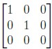
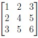
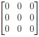
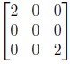

- B has eigenvalues -4, 8, 70.
- A has eigenvalues 1, 16, 81.
- B is an upper triangular matrix.
- B is a lower triangular matrix.
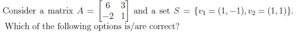
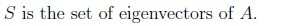
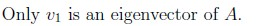
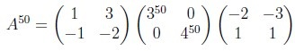
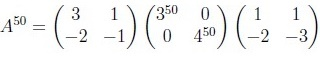
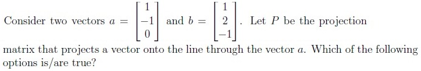
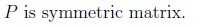
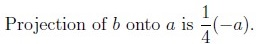
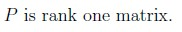
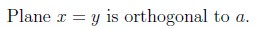
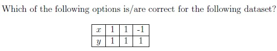
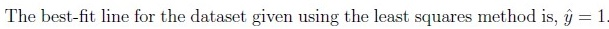
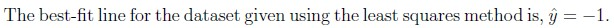
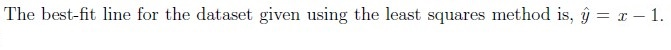
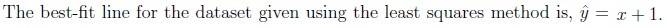
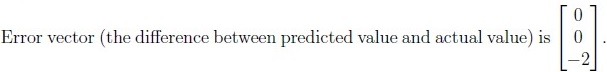
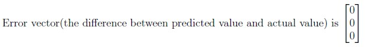
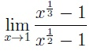
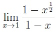
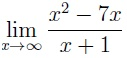
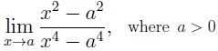
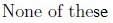
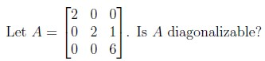
- Yes
- No
- Insufficient information
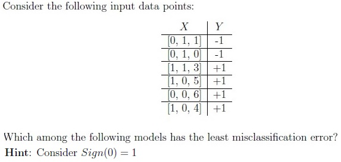
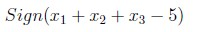
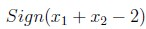
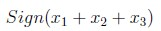
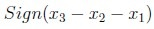
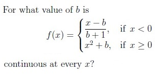
- 3
- 2
- -2
- 1
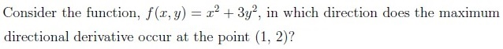
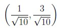
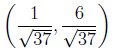
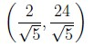
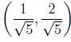
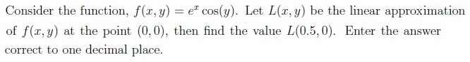
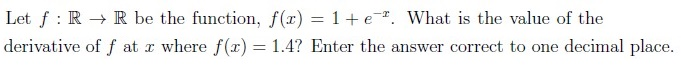
Concepts this paper tests
Auto-generated summary from the source site. Handy as a checklist; the lessons above explain each idea from scratch.
Summary of Core Topics, Concepts, Principles, and Equations
Linear Algebra
Matrices and Rank
- Rank of a matrix
- Column space and row space
- Upper and lower triangular matrices
- Eigenvalues and eigenvectors
- Diagonalizable matrices
Matrix Operations
- Matrix addition and multiplication
- Matrix inversion
- Projection matrices
Eigenvalues and Eigenvectors
- Calculation of eigenvalues and eigenvectors
- Properties of eigenvalues and eigenvectors
Projection Matrices
- Projection of a vector onto a line
- Properties of projection matrices
Calculus
Limits
- Evaluation of limits
- Finite and infinite limits
Continuity
- Continuous functions
- Conditions for continuity
Derivatives
- Partial derivatives
- Directional derivatives
- Linear approximation
Machine Learning
Least Squares Method
- Best-fit line
- Error vectors
Classification Models
- Misclassification error
- Sign function
Equations
Linear Algebra
- Eigenvalues and Eigenvectors
where is a matrix, is an eigenvector, and is an eigenvalue.
- Projection Matrix
where is a vector.
Calculus
- Partial Derivatives
for a function .
- Directional Derivative
where is the gradient of and is a unit vector.
- Linear Approximation
Machine Learning
- Least Squares Method
where is the slope and is the intercept.
- Sign Function